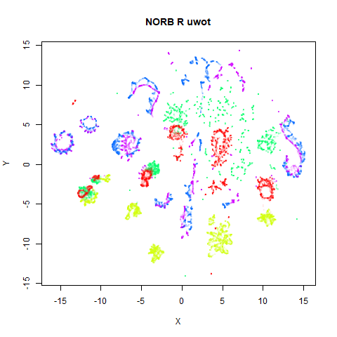
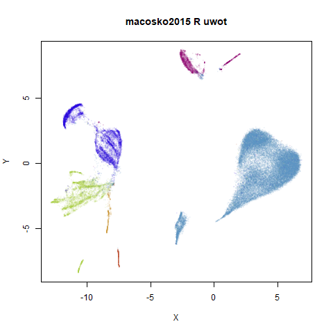
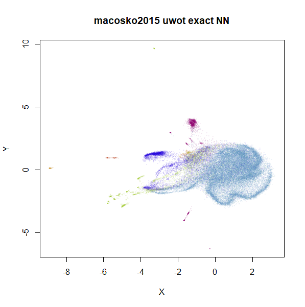
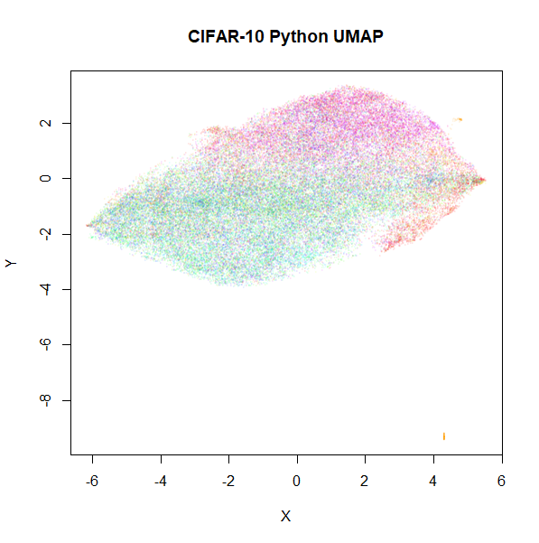
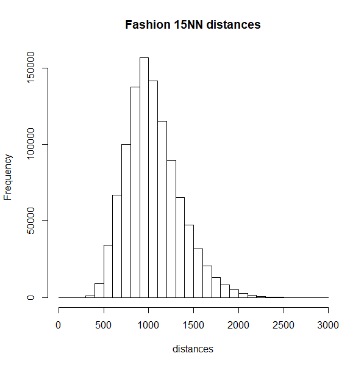
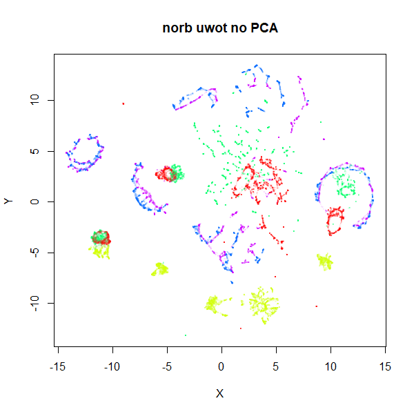
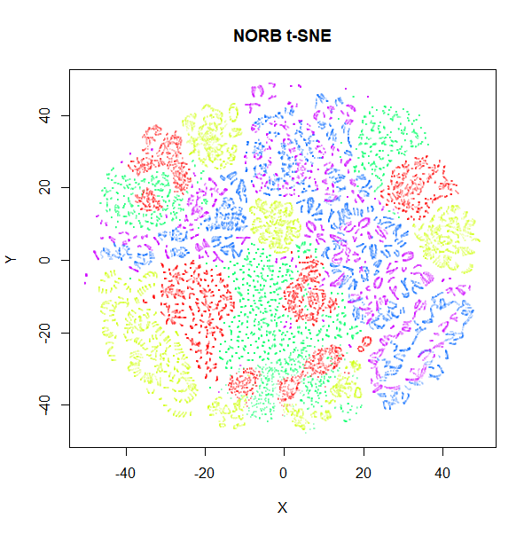
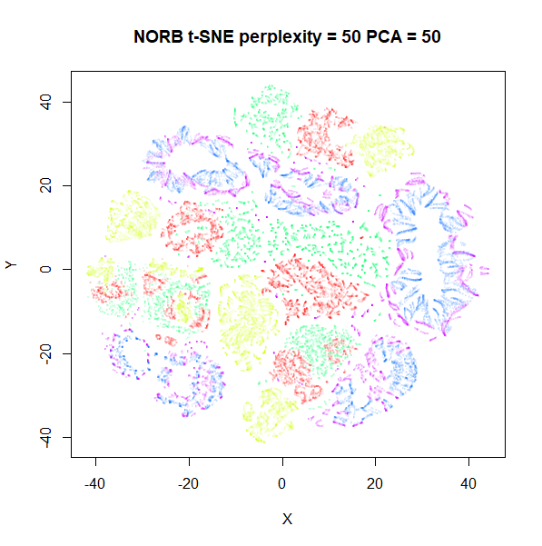
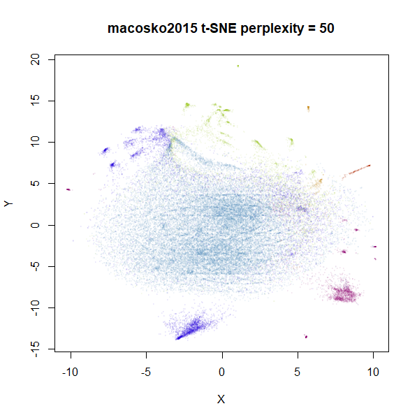

Python Comparison
and some nearest neighbor comparisons
Source:vignettes/articles/pycompare.Rmd
pycompare.RmdThis page is a gallery of images comparing the output of
uwot version 0.1.3 to the Python UMAP
package version 0.3.8. In an ideal world, this wouldn’t be a very
exciting document, as it would exist to demonstrate that
uwot results resemble those from the Python
implementation.
However, there are a couple of examples that highlight some
differences between the implementations. It’s still not that exciting,
but there may be some information of use to anyone using
uwot and possibly some implications for users of t-SNE
packages. To distinguish between the general technique of UMAP and the
its specific implementation in the Python package of the same name, I’ll
refer to the Python implementation with the formatting
UMAP.
For details on the datasets, see the UMAP
examples gallery. The uwot results have been re-run for
the images here using different random seeds, but they should resemble
the uwot output on that page.
The datasets originated in R, mostly being loaded via the snedata package. I then exported them to CSV, before reading them into Python. UMAP version 0.3.8 was used to generate the embeddings, using all default settings. The embeddings were then written to CSV and read back into R for visualization.
The uwot output also used default settings with the
following exceptions: pca = 100 was used to reduce the
dimensionality to a maximum of 100 columns (data was mean-centered as
part of this process, but not rescaled), because the Annoy nearest
neighbor search can be very slow for high-dimensional data.
UMAP’s nearest neighbor
search seems less affected by dimensionality. Also,
min_dist = 0.1, which is the default for the Python UMAP.
uwot uses a default of min_dist = 0.01. Why? I
would love to tell you, but I think I just made a mistake when I set the
uwot defaults. Therefore, the defaults will probably change
in some later version of uwot. Fortunately, this doesn’t
make a perceptible practical difference, but I will use the Python
default of min_dist = 0.1 in the following results.
There is also a potential difference in initialization. Both packages
use a spectral initialization if possible, but differ if the input graph
contains more than one component: UMAP attempts a
meta-embedding of the two separate components, where uwot
abandons a spectral approach and falls back to using PCA (followed by
rescaling the output to a standard deviation of 1 for each axis). This
affects the following datasets: iris, coil20,
coil100, norb and tasic2018.
Below the results on the left are for the uwot output.
The image on the right is from UMAP. I present most of
these results without comment because they seem to be very similar to
each other. There are two exceptions, for the small NORB dataset
(norb) and the gene expression dataset
macosko2015, which will be discussed in their section.
Results


norb
|  |  |
Here’s a result that seems worth commenting on. The uwot
results show slightly less structure, a large blue loop seems to have
been broken up.
I suspect that the PCA preprocessing to 100 dimensions as used by
uwot is too aggressive here and might be throwing away too
much of the variance in the dataset. Compared to the ground truth 15
nearest neighbors using FNN, Annoy results
with pca = 100 are 82% accurate. Without PCA, this accuracy
goes up to 99% and the uwot results are much closer to the
UMAP results. This is the image below, on the left.
Meanwhile, if you use the PCA results as input to UMAP, the
output now looks a bit more like the uwot results. That’s
the image on the lower right.
 |
 |
Unfortunately, the very high dimensionality of norb
makes running Annoy on it directly very slow indeed: with a
single-thread, it took 4 and a half hours, versus around 5 minutes in
the PCA case. We will revisit nearest neighbor accuracies later.
Note also that norb is one of the datasets where the
graph contains two separate components, so the initialization of the
output coordinates is different between uwot and
UMAP, with UMAP’s “meta-embedding” approach
better at retaining local structure.


macosko2015
|  |  |
This result shows the largest deviation of uwot from
UMAP. That big cyan cluster is of an obviously different
shape in the two plots. The source of the difference here seems to be
nearest neighbor results. It turns out that both uwot and
UMAP have trouble find good approximations to the nearest
neighbors with this dataset, but UMAP does a lot better. We
will get into more detail about the nearest neighbor accuracies across
the datasets in the next section. For now, below are two further plots.
The left-hand plot is the uwot results when it uses the
more accurate nearest neighbor data calculated by UMAP: the
uwot results now resemble the UMAP results,
which is reassuring. The right hand plot uses exact nearest neighbor
results calculated via the FNN.
 |
 |
Even though the UMAP nearest neighbor data is better
than that which uwot produced, we can still see an obvious
difference in the two plots, so it’s clear that this data set presents a
challenge for the approximate nearest neighbor methods considered
here.
cifar10
 |
 |
Based on results with this dataset in the UMAP
examples gallery, I wasn’t expecting these results to be a feast for
the eyes. After seeing the difference in results with
macosko2015, I am just relieved that these two results look
disappointing in a similar way.
Nearest Neighbor Accuracy
The norb and macosko2015 results suggest
that the use of PCA and the nearest neighbor search methods present the
biggest source of difference between uwot and
UMAP. Here are some more details.
For small datasets, which in both implementations means less than
4,096 observations, both uwot and UMAP
calculate the exact nearest neighbors. For larger datasets,
uwot uses the Annoy method, and
UMAP uses pynndescent, which
uses random projection trees, followed by nearest neighbor descent.
For the larger datasets, I used the FNN package to
generate the exact 15 nearest neighbors and then compared results for
uwot and UMAP. For UMAP, I used
default settings. For uwot, I applied
pca = 100 as that is what I currently use for high
dimensional datasets. The third column shows the amount of variance
explained by only keeping 100 components.
| datasets | uwot |
UMAP |
PCA 100 var |
|---|---|---|---|
coil100 |
89.1% | 99.7% | 88.4% |
mnist |
86.2% | 97.5% | 91.5% |
fashion |
74.3% | 97.9% | 91.2% |
kuzushiji |
78.3% | 95.2% | 84.6% |
norb |
81.7% | 98.3% | 95.6% |
tasic2018 |
48.0% | 97.7% | 67.7% |
macosko2015 |
11.2% | 41.8% | 37.3% |
cifar10 |
67.4% | 84.1% | 90.1% |
UMAP does a pretty incredible job with nearly every
dataset, and it’s fast too. And it doesn’t need to use PCA to
reduce the dimensionality. The obvious exception is
macosko2015. I was unable to find a combination of
parameters with pynndescent that produced good results,
e.g. by increasing the number of trees in the RP tree initialization or
the number of iterations in the nearest neighbor descent phase. With
n_trees=250, I was able to get to 54.9% accuracy, but I
started to get out of memory errors much beyond this setting, and
nearest neighbor descent tends to converge after 5-6 iterations anyway.
Doing better will may require more manipulation of the sampling rate and
candidate list size used in nearest neighbor descent, which can quickly
cause a large increase in memory and run time if you aren’t careful.
Also, you can’t fiddle with these parameters in UMAP
version 0.3.8 anyway.
uwot results… well, they’re less impressive than
UMAP’s. The tasic2018 results are pretty bad,
and the macosko2015 results can be fairly described as
horrendous. The accuracies show a rough correlation with the percentage
of variance explained by 100 components. Results for
tasic2018 and especially macosko2015 show that
100 components may not be enough to extract the meaningful variation
from the datasets, which might explain the inability to find the true
nearest neighbors. The uwot defaults for the Annoy search
are somewhat arbitrary, having been copied from LargeVis. That package
used nearest neighbor descent to improve the accuracy, and increasing
Annoy’s n_trees parameter can give a small improvement to
some of the datasets, but the increase in computation time is probably
not worth the small increase in accuracy I’ve seen when trying this. It
seems that in cases where the current defaults don’t work well, it’s
because too much information is thrown away by the PCA
pre-processing.
tasic2018 and macosko2015 are both
transcriptomics datasets and clearly represent an interesting challenge
to Annoy, while macosko2015 troubles even pynndescent. The
other datasets are image datasets. Possibly the way the data has been
scaled and prepared for these biology datasets makes life harder for
approximate nearest neighbors? It’s hard to know where to start when it
comes to unpicking what causes macosko2015 to perform so
differently, but here is a histogram of the nearest neighbor distances
for macosko2015 and tasic2018 (top row), which
misbehave with Annoy, and on the bottom row are the histograms for
mnist and fashion, which are better
behaved:
 |
 |
 |
 |
The biomodal distribution of macosko2015 and
tasic2018 do seem more similar to each other than they do
to mnist or fashion. That said,
tasic2018 behaves perfectly well with the pynndescent
method, so I see no obvious answers here.
Conclusions
The good news is that for most datasets, the differences between
uwot’s UMAP implementation and that of the Python
UMAP implementation makes very little difference. The bad
news is that there are a couple of cases where we see
differences. The biggest offender is macosko2015 but there
neither method is doing a perfect job. Nonetheless, UMAP is
able to calculate nearest neighbors more accurately and more quickly
than uwot.
One source of the difference is the use of Annoy as the nearest neighbor calculation method. It does seem to be solidly slower than pynndescent, but in my experience, it can reach high accuracies. even if it takes a while. March 8 2020: On Windows, there used to be an issue where an Annoy index that was larger than 2GB on disk couldn’t be read back in. Make sure you are using a version of RcppAnnoy 0.0.15 or later to avoid this.
The time to search an Annoy index seems to start scaling quite badly
with dimensionality > 1000, so if you can get away with picking
500-1000 random features and use that, you could try that. With 1,152
random features (i.e. 1/16th the pixels innorb), visual
results aren’t that much worse with this approach and the
nearest neighbor search runs 100 times faster (50 minutes vs 20
seconds):
|  |  |
Otherwise, if you have a high-dimensional dataset, you should
consider PCA. I don’t have any solid advice for the number of components
to retain if you do use PCA for preprocessing. Less than the usual t-SNE
default of 50 is probably unwise. I use pca = 100 in most
examples, but as we’ve seen, that can still sufficiently perturbs the
pairwise distances in the input data to give some differences in the
output. It would be nice if you could use more components to get a
better trade-off of accuracy and speed, but even with fast partial PCA
routines used by uwot (courtesy of irlba), extracting
more than 100 components can be quite time-consuming.
What about t-SNE?
uwot is not the only dimensionality reduction to use PCA
or Annoy for approximate nearest neighbor search. LargeVis uses it, the
t-SNE package Fit-SNE
has Annoy as an option and openTSNE seems to
have at least considered it (see e.g. https://github.com/pavlin-policar/openTSNE/issues/28).
It is also standard practice in t-SNE to reduce dimensionality: Rtsne, a wrapper around the
de-facto standard Barnes Hut t-SNE routine. will only keep 50 components
via PCA by default.
Does the PCA issue effect t-SNE? Well, a little bit. Below are
results for norb and macosko2015 (openTSNE’s
documentation is where I discovered this dataset, as it happens) with
t-SNE results from Rtsne, using
perplexity = 15. The images on the left use PCA to reduce
the initial dimensionality down to 100, while the ones on the right use
the raw input data.
|  |  |
 |
 |
norb results seem fairly unaffected, but we also see for
macosko2015 that there’s a change to the main large
cluster. Usually, you don’t set perplexity as low as 15, so are there
also differences when the perplexity is set to a more typical value,
like 50? Also, the default PCA dimensionality setting in
Rtsne is 50, not 100, so here are those t-SNE plots
repeated with perplexity = 50 and either
pca = TRUE, partial_pca = TRUE, initial_dims = 50 on the
left, and pca = FALSE on the right:
|  |  |
 |
 |
Again, the norb dataset is less affected than
macosko2015 but for the latter there is a definite effect
of preprocessing with PCA. This is something to bear in mind before
applying PCA to your data even with t-SNE. On balance, I’d probably live
with the effect of applying PCA to your data, because just like with
uwot, Rtsne input processing can take a few
hours with very high dimensional datasets.
Finally, some people consider results obtained with PCA to be
more reliable than those using the “raw” input, because PCA can
be considered a way to denoise data, where the lower-variance components
are assumed to be irrelevant. I might be a bit biased, but of all the
UMAP plots of macosko2015, I think the default
uwot one shows the best separation of clusters, so maybe
there’s something to it. But this is also the reason I tabulated the
amount of variance 100 components explained for each dataset. Where most
of the datasets keep a large majority of the variance with 100
components, in the case of macosko2015, you would have to
be prepared to argue why it was ok to throw away over 60% of variance in
the data. I’m sure it can be done, but you would need a solid, ideally
biology-based justification.
A future version of uwot will hopefully contain an
implementation of nearest neighbor descent optimization to reduce the
gap in nearest neighbor accuracy with UMAP.